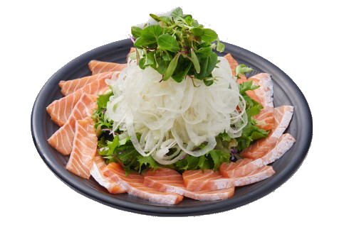

메뉴목록
꼬치류
-
- 매운닭산적
꼬치
- Grilled Chicken Skewers with Spicy teriyaki
얼큰하게 매운소스가 들어간 매콤 닭꼬치
-
- 은행꼬치
- Grilled ginkgo nut Skewers with Seasoning
저열량,저지방에 영양가득한 작은 보약 은행꼬치
-
- 삼겹팽이
꼬치
- Grilled Pork belly & enoki mushroom Skewers
고소한 삼겹살과 아삭한 팽이버섯을 함께 구운 꼬치
-
- 마늘꼬치
- Grilled garlic Skewers with Seasoning
알긴산이 풍부한 마늘을 먹기 좋게 구운 꼬치
-
- 닭껍질꼬치
- Grilled chicken skin Skewers with Seasoning
불향가득 훈연해서 바싹하게 구운 닭껍질 꼬치
-
- 마늘 은행
꼬치
- Grilled garlic & ginkgo nut Skewers with Seasoning
마늘과 은행이 같이 들어간 꼬치
-
- 염통꼬치
- Grilled chicken heart Skewers with Seasoning
데리야끼 소스에 구워 먹어도 먹어도 질리지 않는 염통꼬치

- 데리야끼
닭산적
- Grilled Chicken Skewers with teriyaki
달콤 짭쪼름한 데리야끼 닭꼬치
-
- 모듬꼬치
- Assorted skewers
골라먹는 재미 한꺼번에 주문하는 모둠꼬치
나베류
-
- 스키야키
- beef with vegetables Hot Pot
진항 풍미와 조화로운 맛이 일품인 스키야키
-
- 통오징어
나가사키
짬뽕
- japanese style Seafood Noodle Soup with squid
통오징어가 들어간 담백한 나가사키짬뽕
-
- 돈까스
김치나베
- Pork Cutlet with Japanese-style Kimchi Hot Pot
칼칼하고 개운한 국물맛이 일품인 돈까스 김치나베
-
- 간사이
오뎅나베
- japanese style Fish Cake Soup
진한 국물맛과 쫄깃한 간사이오뎅이 일품인 나베
-
- 통오징어
해물짬뽕
- Spicy Seafood Noodle Soup with squid
통오징어가 들어간 얼큰한 해물짬뽕
사시미류
-
- 연어사시미
- sliced raw fish salmon
신선하고 탱팅한 연어를 프레시하게 즐기는 연어 사시미
- 
- 연어샐러드
- Salmon Salad
새콤달콤 오리엔탈 드레싱으로 맛을 낸 연어샐러드
튀김류
-
- 치킨
가라아게
- japanese style fried chicken
맥주와 환상궁합을 자랑하는 치느님 치킨가라아게
-
- 감자고로케
- potato croquette
겉은 바삭 속은 폭신폭신, 노릇하게 튀겨낸 감자고로케